Main Lab 06
Learn how Git tracks code changes and how GitHub stores projects online.
A repository (repo) in GitHub is basically a project folder that stores everything related to your project.
Git is a version control system.
In simple words: it helps you track changes in your code over time.
commit.branches.You write a Selenium test today and save it. Tomorrow you update it. Git keeps both versions. If something breaks, you can go back easily.
GitHub is a cloud platform that uses Git.
In simple words: it is a website where you store your Git projects online.
One-line summary: Git tracks your code changes, GitHub stores and shares them online.
Central Repository - online repository, usually GitHub.
Local Repository - offline repository created on your computer.
Staging Area - a temporary place where you select changes before saving them as a commit.
Working Directory -> git add -> Staging Area -> git commit -> Local RepositoryWorking Directory -> Staging Area -> Local Repository -> Remote Repositorygit commit.Note: we usually push code to a branch in the remote repository. Then we create a pull request to move the code to main.
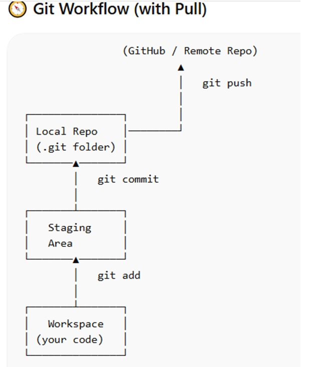
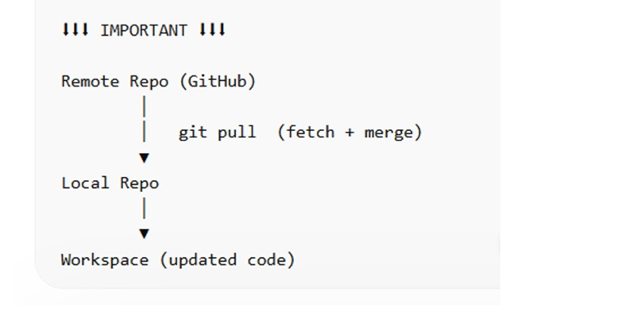
To use GitHub, we need Git installed on the computer and a GitHub account.
Git download website: https://git-scm.com/downloads
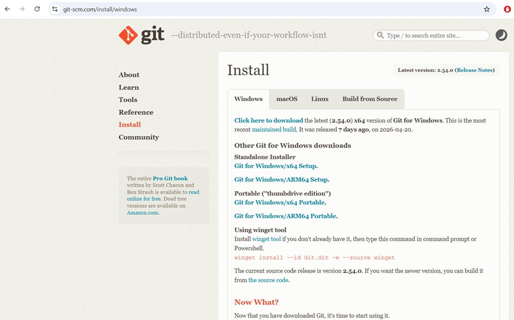
Check the Git version in command prompt using git --version.
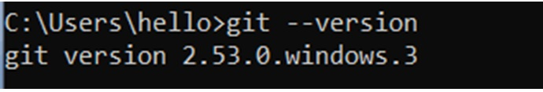
Go to the project folder and open command prompt from that path.
Note: you have to be in the right project folder.
Run git init. It tells Git to start tracking the folder.
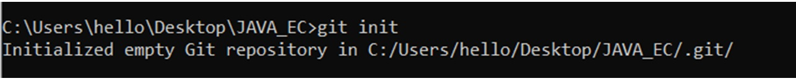
Run git status. It shows the files in the folder. If a file is shown as untracked, it is not moved to staging yet.
On branch master means the current branch name is master. This is the default branch name Git created on that system.
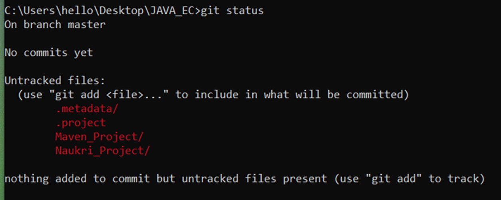
To add files to staging, use git add.
git add . adds all files in the folder to staging.git add file-name adds only the specific file or folder to staging.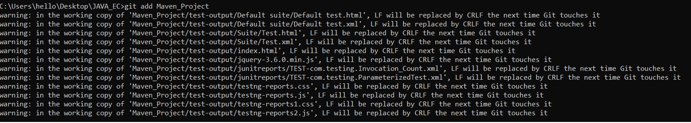
After staging, git status shows files under Changes to be committed.
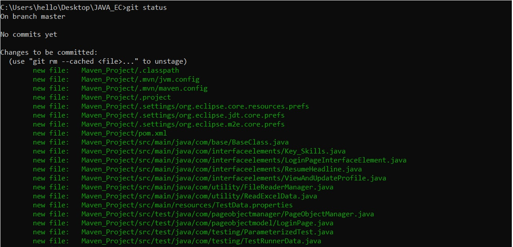
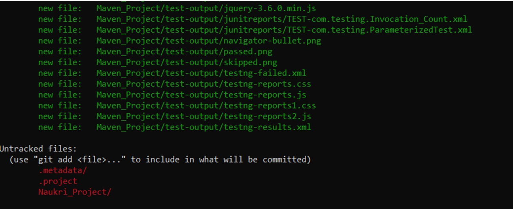
Move files from staging to local repository using git commit -m "Initial commit".
-m means message. The commit message should be inside double quotes.
If you are using Git for the first time, it may ask for username and email.
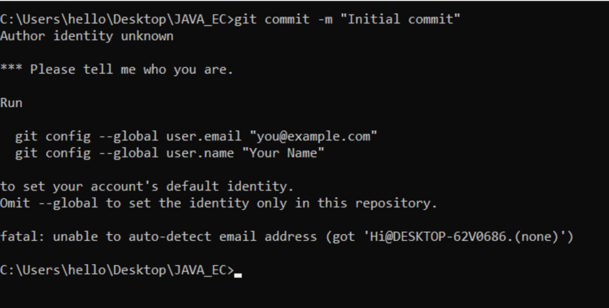
Set the Git username and email:
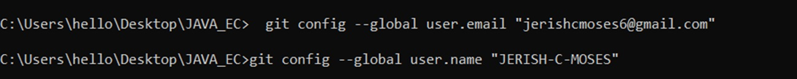
Then commit again:
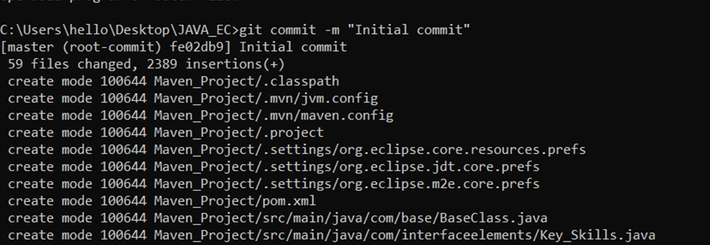
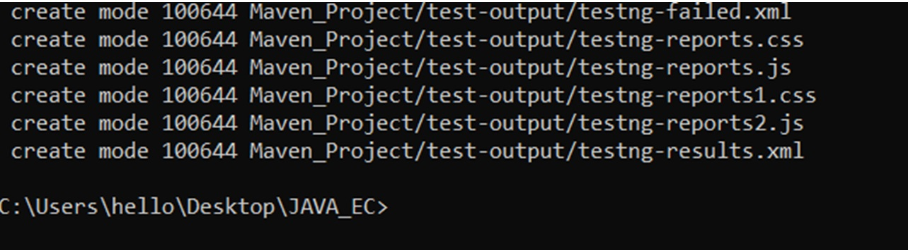
Now check status to see if the staged files moved to the local repository.
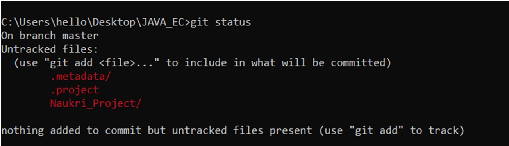
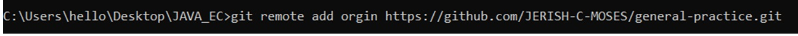
Git created a branch named master. In GitHub, the main branch is commonly named main, so we rename it.
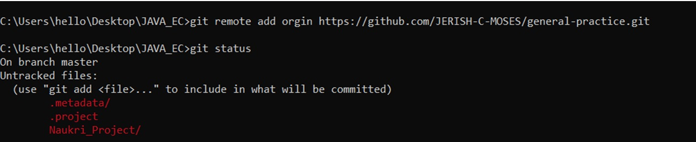
It simply means you are currently working on a branch called master.
A branch is your working version of the project.
git init, Git created a default branch.master.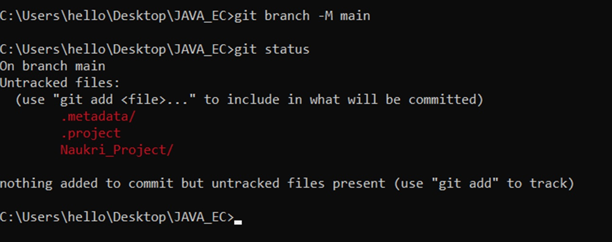
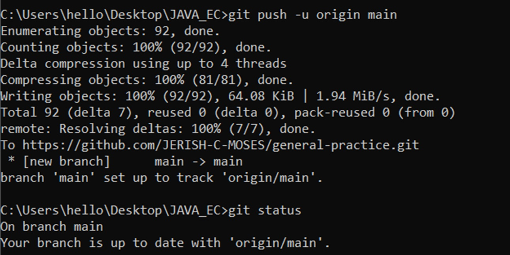
After this, refresh the GitHub repository page. Your project files should be visible online.
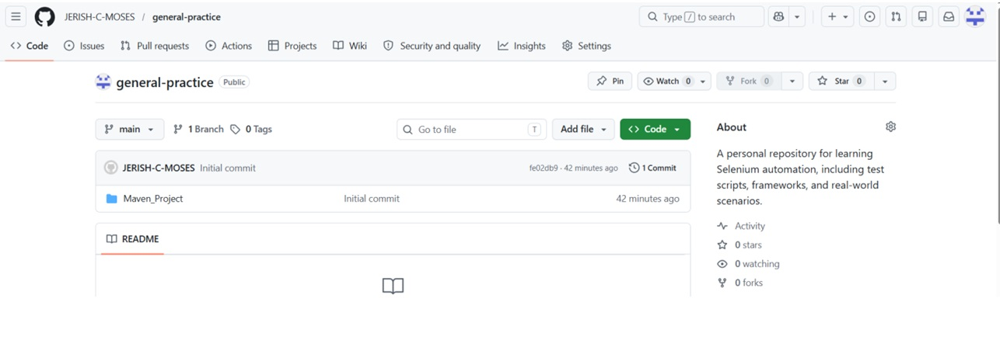
ALL THE ABOVE STEP IS FOR FIRST TIME ALONE
Now let us assume I am going to an organization and want someone's repository who is about to leave the company. For this purpose, we must clone his repository.
Go to the location where we want to clone and open cmd.
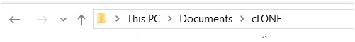
Give git clone url.
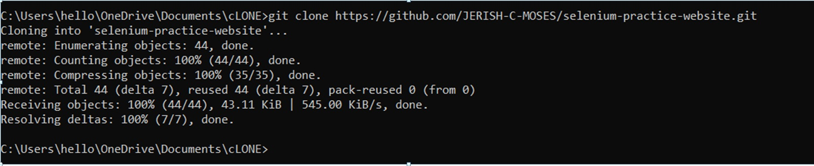
We should not work in the main branch. We must work in a separate branch.
Use git pull.
git pull brings the latest code from remote GitHub to your local system.
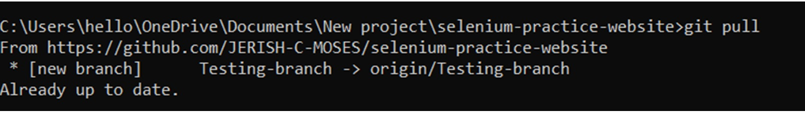
Go to your branch from main using git checkout branch-name.
Note: to go to main again, use git checkout main.
Then follow the below process. After that, go to GitHub and create a pull request to merge the code into main.
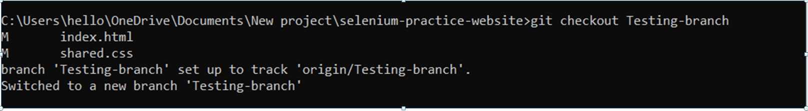
Now we have done all the previous process. When we want to update only the changes, we give:
git add .git commit -m "message"git pushAlready updated code must be sent to the branch.
If the code is already sent, go to Pull requests and give New pull request.
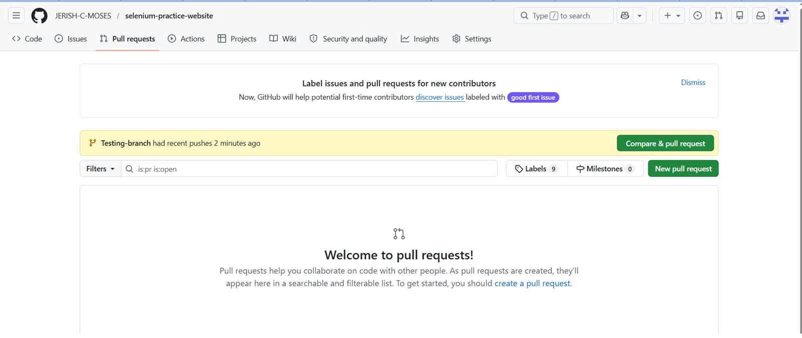
Select the branch from which the pull request must be made.
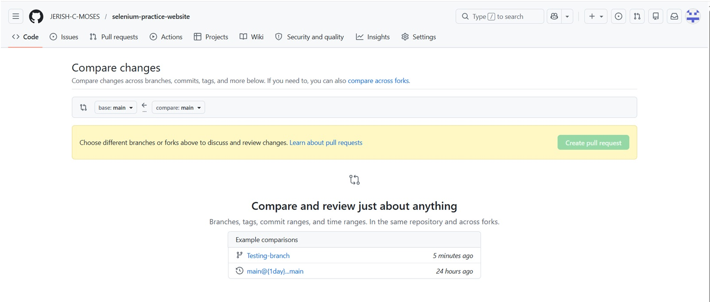
Changes in the code will be displayed. Check it, give Create pull request, type the message to the manager, and give Create pull request.
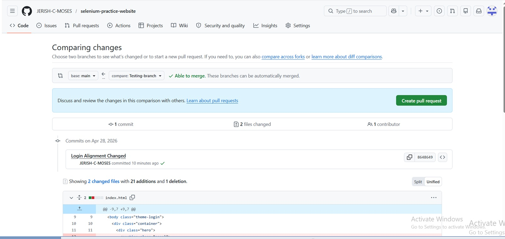
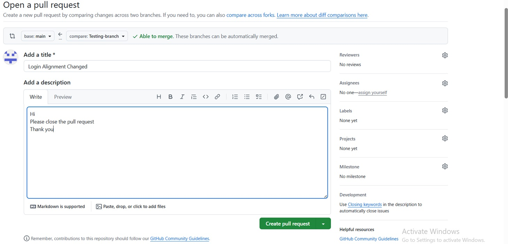
If everything is okay, then the manager will give Merge pull request.
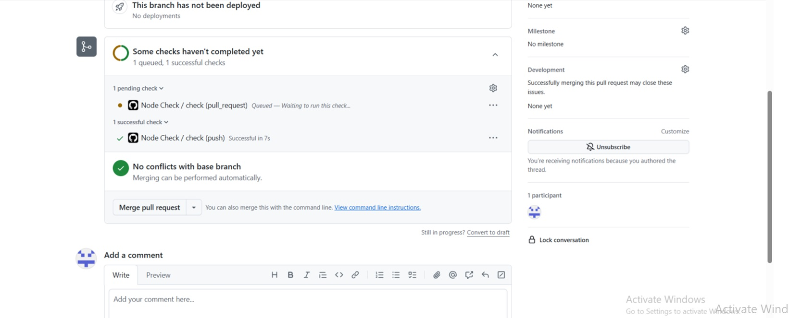